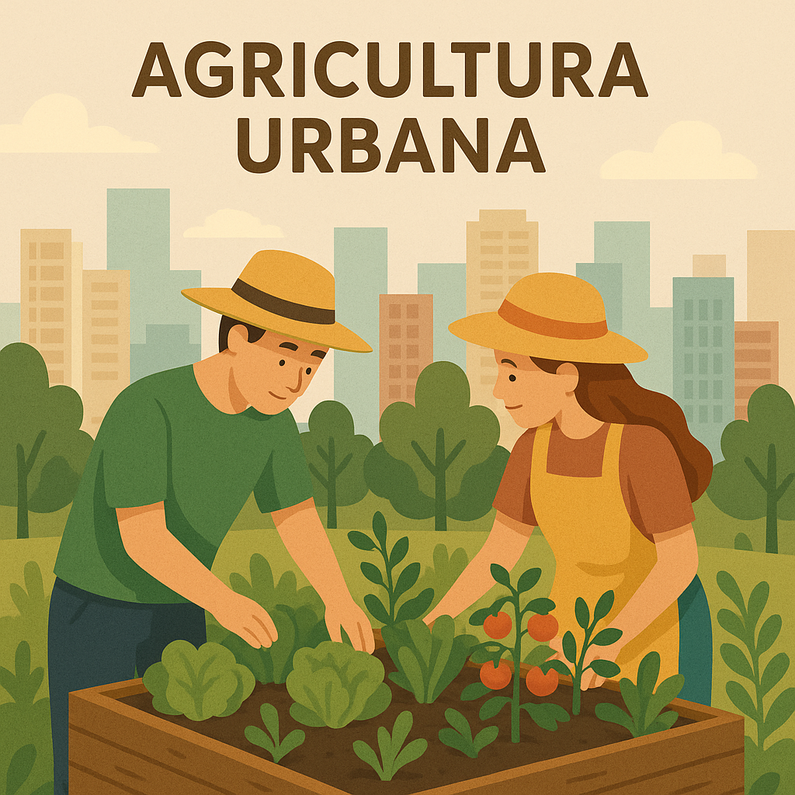
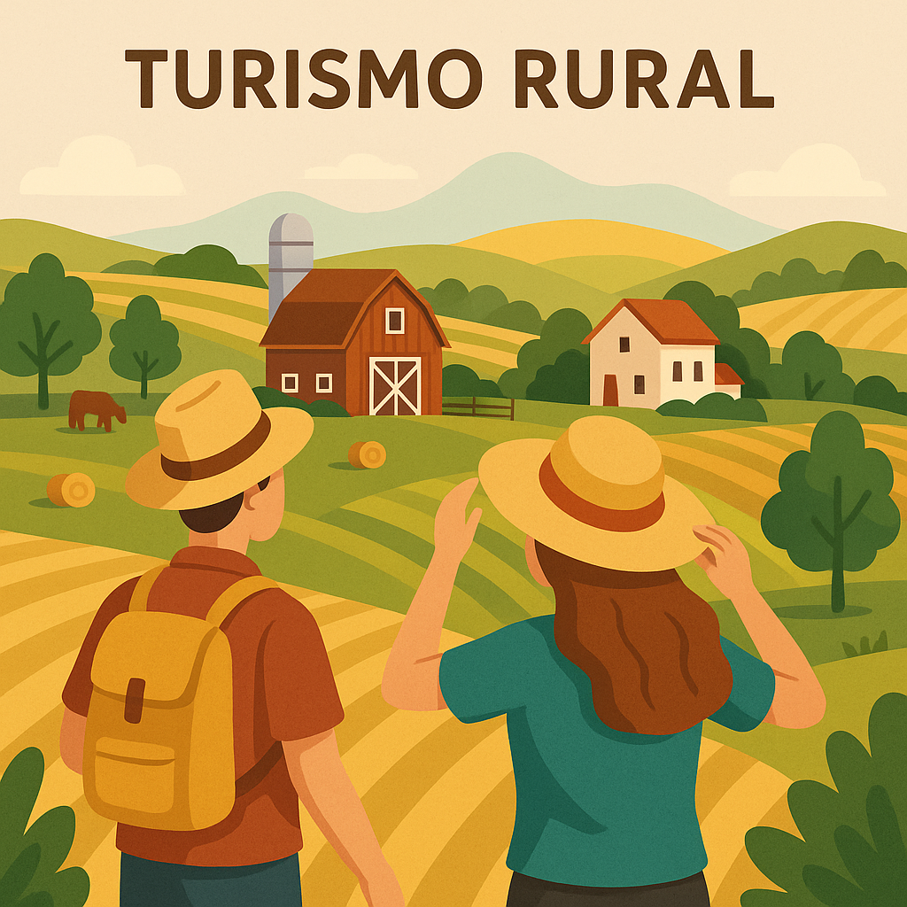
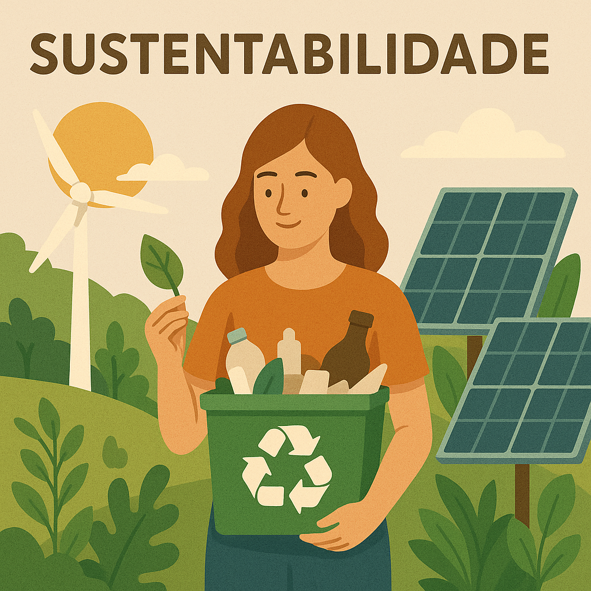

Projetos e Iniciativas

Agricultura Urbana
Como trazer o campo para a cidade através de hortas comunitárias, telhados verdes e agricultura vertical.
Saiba mais

Turismo Rural
Descubra como o turismo no campo pode revitalizar comunidades rurais e conectar urbanos à natureza.
Saiba mais

Sustentabilidade
Soluções sustentáveis que beneficiam tanto a cidade quanto o campo, criando um futuro mais verde.
Saiba mais